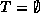
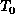
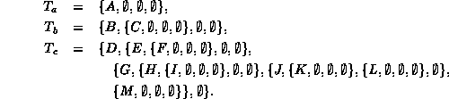

Data Structures and Algorithms
with Object-Oriented Design Patterns in Java
Data Structures and Algorithms
with Object-Oriented Design Patterns in JavaIn the preceding section we considered trees in which the nodes can have arbitrary degrees. In particular, the general case allows each of the nodes of a tree to have a different degree. In this section we consider a variation in which all of the nodes of the tree are required to have exactly the same degree.
Unfortunately, simply adding to Definition  the additional requirement that all of the nodes of the tree
have the same degree does not work.
It is not possible to construct a tree which has a finite number of nodes
all of which have the same degree N
in any case except the trivial case of N=0.
In order to make it work,
we need to introduce the notion of an empty tree as follows:
the additional requirement that all of the nodes of the tree
have the same degree does not work.
It is not possible to construct a tree which has a finite number of nodes
all of which have the same degree N
in any case except the trivial case of N=0.
In order to make it work,
we need to introduce the notion of an empty tree as follows:
Definition (N-ary Tree) An N-ary tree T is a finite set of nodes with the following properties:
- Either the set is empty, ; or
- The set consists of a root, R, and exactly N distinct N-ary trees. That is, the remaining nodes are partitioned into subsets, ,
, ..., , each of which is an N-ary tree such that .
According to Definition ,
an N-ary tree is either the empty tree,  ,
or it is a non-empty set of nodes which consists of a root
and exactly N subtrees.
Clearly, the empty set contains neither a root, nor any subtrees.
Therefore, the degree of each node of an N-ary tree is either zero or N.
,
or it is a non-empty set of nodes which consists of a root
and exactly N subtrees.
Clearly, the empty set contains neither a root, nor any subtrees.
Therefore, the degree of each node of an N-ary tree is either zero or N.
There is subtle, yet extremely important consequence
of Definition that often goes unrecognized.
The empty tree, , is a tree.
That is, it is an object of the same type as a non-empty tree.
Therefore, from the perspective of object-oriented program design,
an empty tree must be an instance of some object class.
It is inappropriate to use the null reference to represent an empty tree,
since the null reference refers to nothing at all!
The empty trees are called external nodes because they have no subtrees and therefore appear at the extremities of the tree. Conversely, the non-empty trees are called internal nodes .
Figure shows the following
tertiary
(N=3) trees:

In the figure, square boxes denote the empty trees
and circles denote non-empty nodes.
Except for the empty trees,
the tertiary trees shown in the figure contain the same sets of
nodes as the corresponding trees shown in Figure .

Figure: Examples of N-ary trees.
Definitions and both define trees
in terms of sets.
In mathematics, elements of a set are normally unordered.
Therefore, we might conclude that that relative ordering of the
subtrees is not important.
However, most practical implementations of trees define
an implicit ordering of the subtrees.
Consequently, it is usual to assume that the subtrees are ordered.
As a result, the two tertiary trees,
and
,
are considered to be distinct unequal trees.
Trees in which the subtrees are ordered are called
ordered trees .
On the other hand, trees in which the order does not matter
are called oriented trees .
In this book, we shall assume that all trees are ordered
unless otherwise specified.
Figure suggests that every N-ary tree contains
a significant number of external nodes.
The following theorem tells us precisely how many external nodes we can expect:
Theorem An N-ary tree withinternal nodes contains (N-1)n+1 external nodes.
extbfProof Let the number of external nodes be l. Since every node except the root (empty or not) has a parent, there must be (n+l-1)/N parents in the tree since every parent has N children. Therefore, n=(n+l-1)/N. Rearranging this gives l=(N-1)n+1.
Since the external nodes have no subtrees,
it is tempting to consider them to be the leaves of the tree.
However, in the context of N-ary trees,
it is customary to define a leaf node
as an internal node which has only external subtrees.
According to this definition,
the trees shown in Figure have exactly the same
sets of leaves as the corresponding
general trees shown in Figure .
Furthermore, since height is defined with respect to the leaves, by having the leaves the same for both kinds of trees, the heights are also the same. The following theorem tells us something about the maximum size of a tree of a given height h:
Theorem Consider an N-ary tree T of height. The maximum number of internal nodes in T is given by
extbfProof (By induction).
Base Case Consider an N-ary tree of height zero. It consists of exactly one internal node and N empty subtrees. Clearly the theorem holds for h=0 since
Inductive Hypothesis
Suppose the theorem holds for  , for some
, for some  .
Consider a tree of height k+1.
Such a tree consists of a root and N subtrees each of which
contains at most nodes.
Therefore, altogether the number of nodes is at most
.
Consider a tree of height k+1.
Such a tree consists of a root and N subtrees each of which
contains at most nodes.
Therefore, altogether the number of nodes is at most
That is, the theorem holds for k+1. Therefore, by induction on k, the theorem is true for all values of h.
An interesting consequence of Theorems and
is that the maximum number of external nodes
in an N-ary tree of height h is given by
The final theorem of this section addresses the maximum number of leaves in an N-ary tree of height h:
Theorem Consider an N-ary tree T of height
extbfProof (By induction).
Base Case Consider an N-ary tree of height zero. It consists of exactly one internal node which has N empty subtrees. Therefore, the one node is a leaf. Clearly the theorem holds for h=0 since .
Inductive Hypothesis
Suppose the theorem holds for  , for some
, for some  .
Consider a tree of height k+1.
Such a tree consists of a root and N subtrees each of which
contains at most leaf nodes.
Therefore, altogether the number of leaves is at most .
That is, the theorem holds for k+1.
Therefore, by induction on k,
the theorem is true for all values of h.
.
Consider a tree of height k+1.
Such a tree consists of a root and N subtrees each of which
contains at most leaf nodes.
Therefore, altogether the number of leaves is at most .
That is, the theorem holds for k+1.
Therefore, by induction on k,
the theorem is true for all values of h.
 Copyright © 1998 by Bruno R. Preiss, P.Eng. All rights reserved.
Copyright © 1998 by Bruno R. Preiss, P.Eng. All rights reserved.